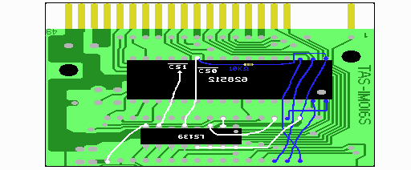
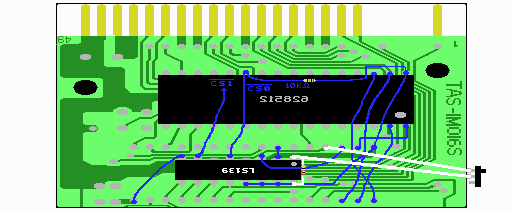

８．LS139の取り付け
LS139は裏側から見て、型番が読めるように取り付けます。
基板の裏側、LZ93A13の反対側にとりつけます。基板に両面テープで固定すると作業が楽です。
ここでの配線は、回路図で赤でかかれた部分です。

LS139の2ピンをLZ93A13の26ピンに半田付けするようにすれば、配線量が少なく済みます。これは本体からのリセット(/RESET)信号です。LZ93A13につながっているので、そこから取る事で配線を簡単にしています。
LS139の3ピンをLZ93A13の30ピンへ接続します。これはLZ93A13からの拡張アドレス信号(B6)です。
LS139の8ピンをLZ93A13の16ピンへ接続します。これは回路図にかかれていませんが、LS139のGND信号で、LZ93A13のGNDとつなげています。
LS139の13〜16ピンをLZ93A13の32ピンへ接続します。これも回路図にはかかれていませんが、とりあえずLS139の16ピンが5Vです。13〜15ピンは使わない入力ピンです。使用しない入力ピンは5VかGNDにつなげておくのが普通です。そこで、13〜16ピンをまとめてLZ93A13の32ピン（５Ｖ）とつなげています。
これらの5VやGNDはどことつなげても良い（SRAMのGNDは別）のですが、説明では一番簡単につなげられると思われる場所を指定しています。
最後に、LS139の5ピンと片方のSRAMの22ピンを接続します。そして、LS139の7ピンともう一方のSRAMの22ピンを接続します。これらがSRAMの/CS信号となります。
図ではわかりにくいですが、/CS0が裏側のSRAMの22ピンに、/CS1が表側のSRAMの22ピンにつながっています。/CS0も/CS1も基板の裏面だけで配線できますが、両者がくっつかないよう注意して下さい。

次にSRAMの切り離しスイッチをつけます。
まず、LS139の1ピンと16ピン(5V)の間に10kΩの抵抗を取り付けます。
次にLS139の1ピンを3ピンスイッチの真ん中のピンへ接続します。
最後にLZ93A13の29ピンを3ピンスイッチのはじのピンへ接続します。これは本体からのスロットセレクト(/SLTSL)信号です。
3ピンスイッチは真ん中のピンとどちらか一方のはじのピンを使うのであれば、どう接続しても構いません。両端のピンへ接続するとスイッチをどう動かしてもONにならないのでNGです。
 次へ
次へ
簡単に説明しますと、/SLTSLがlow(0V)で、/RESETがhigh(5V)の時にB6という信号が0か1かによって、どちらかのSRAMへの /CSがlowになります。/CSがlowになった方のSRAMがアクセスされます。つまり、B6という信号によってアクセスするSRAMを変えているわけです。リセット信号が入っているのは、リセット時にSRAMがアクセスされないようにして、誤動作を防ぐためです。